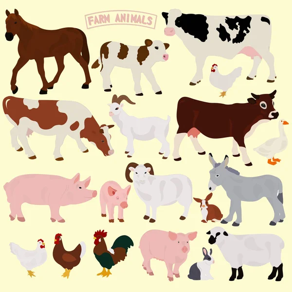
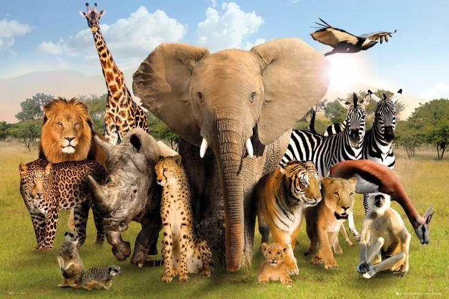

Dieren op veehouderijen
De grootste verspreiders van zoönosen zijn dan de dieren op veehouderijen. De reden hiervoor is dat wij mensen de afgelopen jaren veel in contact komen met vee. Dit gebeurt door het houden van boerderijen, landbouw en vee, maar we zijn ook meer vlees gaan eten. Dit is ook een vorm van contact. Ook zie je dat veel van deze dieren te dicht op elkaar leven, wat het makkelijk maakt voor ziektekiemen om verder te springen op andere organismen. (RIVM, 2021). Als een boer zijn werkomgeving en de stallen niet hygiënisch houdt, resulteert dit tot een broeikas vol met ziektekiemen. Bij een zoönose dat veroorzaakt is door vee of boerderijen hebben we het vooral over dieren, zoals runderen, varkens, schapen, geiten en kippen die de bron zijn. Natuurlijk zijn er door de overheid, artsen en deskundigen maatregelen opgelegd om zoönosen op vee te voorkómen. Zo is er een meldingsplicht, waarbij je bij een zieke medewerker verplicht moet melden dat hij/zij ziek is bij de bedrijfsarts. (RIVM, 2014).
Wilde dieren
Nog een bron/verspreiders van zoönosen zijn wilde dieren. Met wilde dieren bedoelen we dieren die in het wild leven en niet erg in de buurt komen bij mensen. Ondanks dat, kan een zoönose veroorzaakt worden door een wild dier. Zo’n 75% van de zoönotische uitbraken zijn afkomstig van wilde dieren. De meeste van deze dieren leven in Afrika, Azië en Zuid-Amerika in gebieden, zoals oerwoud, tropen, jungles, savanne en regenwouden. Dit hoeft niet altijd zo te zijn. Je kunt wilde dieren ook in de buurt vinden, bijvoorbeeld in bossen. De afgelopen decennia is de technologie flink vooruit gegaan, waardoor we met vliegtuigen binnen 24 uur overal naartoe kunnen gaan. Hierdoor kunnen we makkelijker in de buurt komen van wilde dieren, waardoor er makkelijker ziektes overgedragen kunnen worden. (NCBI, 2004). Daarnaast worden er op sommige gebieden op aarde bushmeat gegeten en worden er verschillende exotische dieren op dierenmarkten verkocht als voedsel. Bushmeat betekent: vlees dat afkomstig is van jacht op wilde dieren (Encyclo.nl, 2022). Vooral in delen van Afrika is dit erg bekent. (National Geographic, 2019). Naast het eten van bushmeat is het verkopen van dieren op dierenmarkt ook een bron bij het verspreiden van dierenziekten. Overal op de wereld kun je wel dierenmarkten vinden, alleen in Azië is het een groot probleem, omdat daar geen rekening wordt gehouden met hygiëne en geen duidelijke maatregelen bestaan. De markten zijn hier overvol en de dieren zitten dicht op elkaar. Qua hygiëne is het op die markten erg slecht. Zo is het coronavirus veroorzaakt door een dierenmarkt in Wuhan in China. (Nature Today, 2020).
Huisdieren

Naast dat veedieren en wilde dieren infectieziekten kunnen verspreiden, kunnen huisdieren dit ook. Een infectieziekten die afkomstig zijn van huisdieren komt niet vaak voor, omdat de meeste huisdieren ingeënt zijn tegen bepaalde ziekten, ontwormt zijn en niet veel in contact komen met andere dieren. Ondanks dat huisdieren goed verzorgd worden, kan een huisdier ziek worden en deze ziekte overdragen aan de eigenaar. Dieren kunnen schimmelinfectie krijgen op hun huid en door het in contact komen met een besmet dier, wordt jezelf ook besmet. Honden en katten kunnen toxoplasmose hebben of geïnfecteerd kunnen raken door andere parasieten. Om een besmetting te voorkomen van je eigen huisdier is het handig om: het huisdier te laten vaccineren; handen te wassen na aanraking; niet te laten likken; bij een krab of beet je wond te laten ontsmetten; hygiënisch omgeving te bieden voor het dier en je huisdier schone voedsel en drinkwater te geven. (RIVM, 2021).

Literatuurlijst